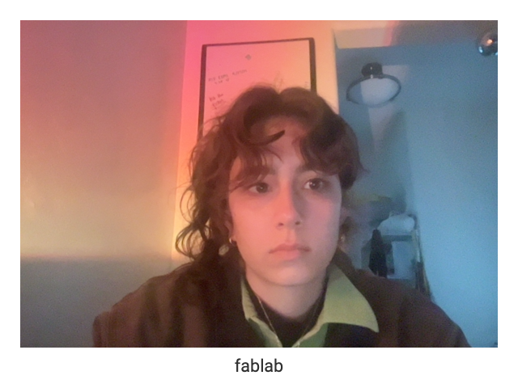
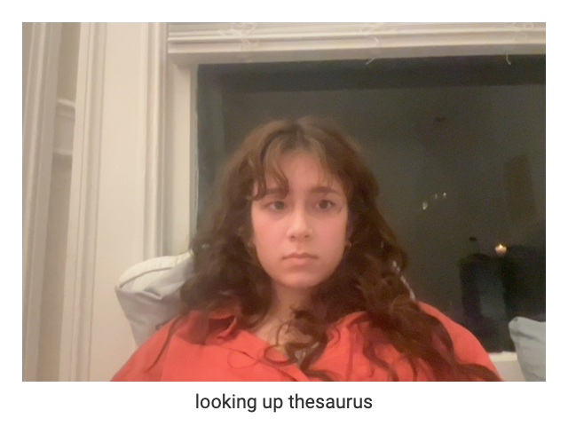
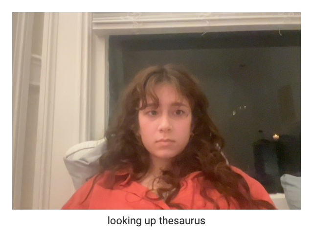
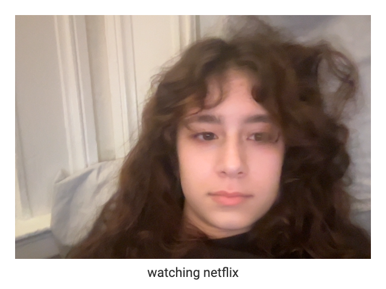
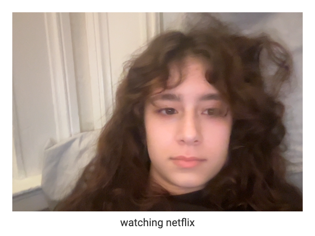

My Relationship with the INTERNET
I grew up in a predominately non-online family. My parents, mostly my mom, have always enforced relatively strict internet and online rules ever since I was little. I wasn’t allowed any social media until around high school and my screen time was considerably monitored during the week and not at all at nighttime. Having that background of a relationship with the online world has made me a relatively non-interested person when it comes to online, at least in terms of media. Most of my time online is spent watching a show, talking to people, or doing schoolwork. Although TikTok is sometimes pretty entertaining which can get me hooked at times, otherwise it’s not super often that I am on social media platforms.
 
 

In the glanceback photos, majority of the screenshots that are uploaded were while I was doing homework, so I categorized a few of them "looking up thesaurus" or “fablab” because those were the corresponding classes that I may have been looking up a question or term for an assignment. Then there is a screenshot titled ”watching netflix”, this one might be the most caught off guard one I got because I had just pulled up a tab to watch a show and glanceback caught me mid laying down.
When discussing the hopes for the internet and online communities, my main concern comes back to a detachment from natural life and exploration. I think it is really easy to become attached to creating an online presence, and while I do believe there are some benefits to the internet, I think the way it has massively and rapidly expanded didn’t allow room for repercussions of this online world. For the communities, it is important to maintain face-to-face relationships and not to entirely rely on connections that are made online. It is honestly tiring to keep up with online, but at the end of the day I don’t want to say that no positives come from it, information becomes easily accessible, you can stay more in touch with international events or conflicts, and expand your own perspectives and knowledge on practically anything and everything. At the end of the day, though, the cons down the line outweigh the pros.